国宝・犬山城 PR CM「姫に、逢いに来ませんか？」
動画「なぜ犬山城は国宝になれたのか」を、城を守り継いだ成瀬家と「今も姫がいる」という物語で、60秒のPR CMにまとめました。
撮影した写真と許可をいただいた写真をもとにAIで映像を動かし、墨と和紙の差し込みカード、AIのナレーションとAIで作曲したBGMを合わせて編集しました。
仕上げに映像を1080pの高画質に整え、オンライン講座の卒業課題として発表します。
画面・作品
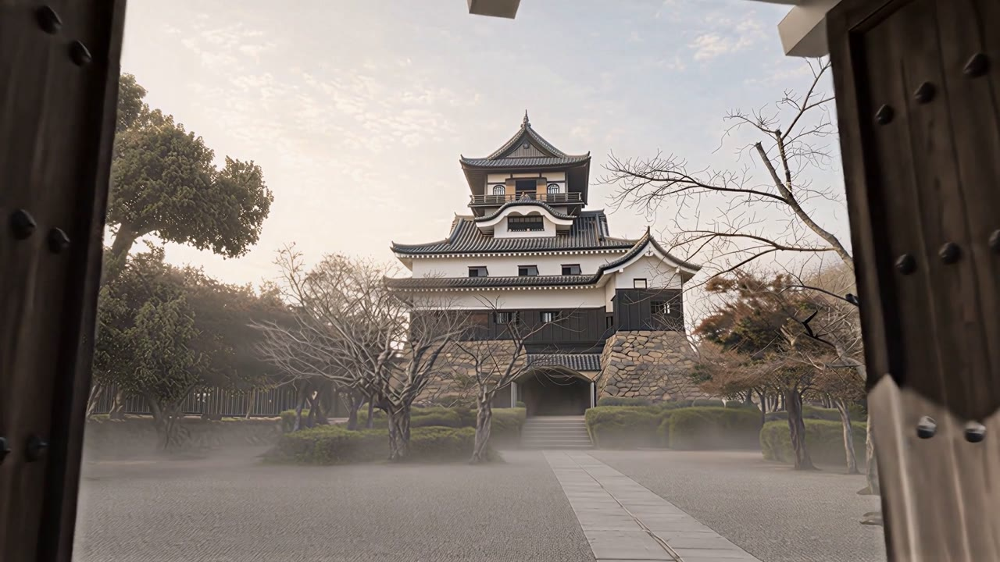
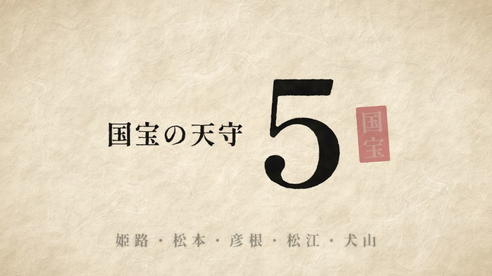
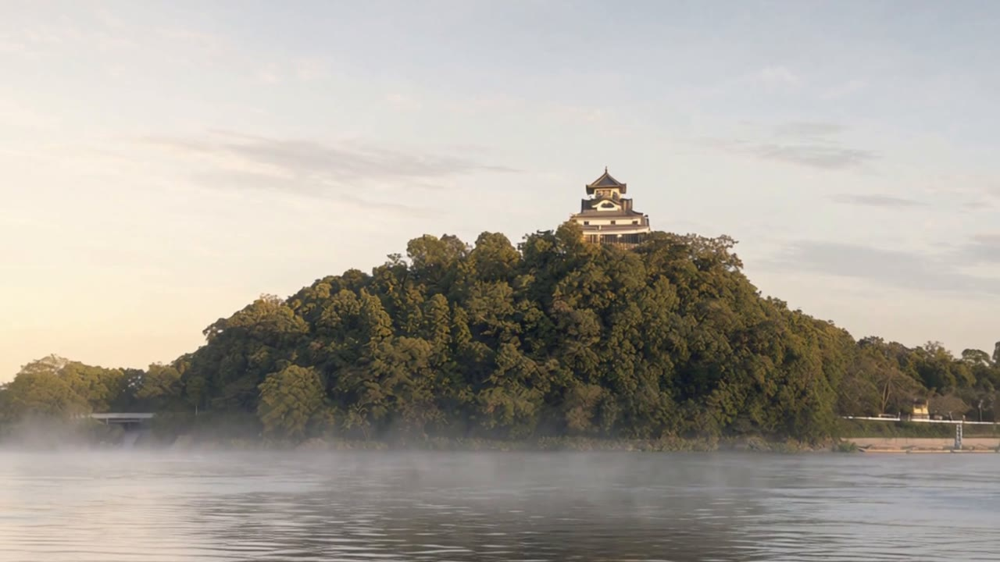
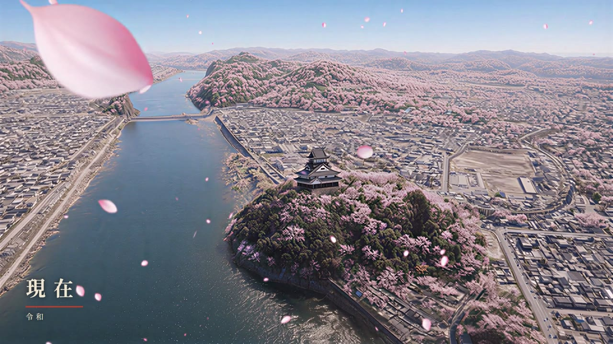
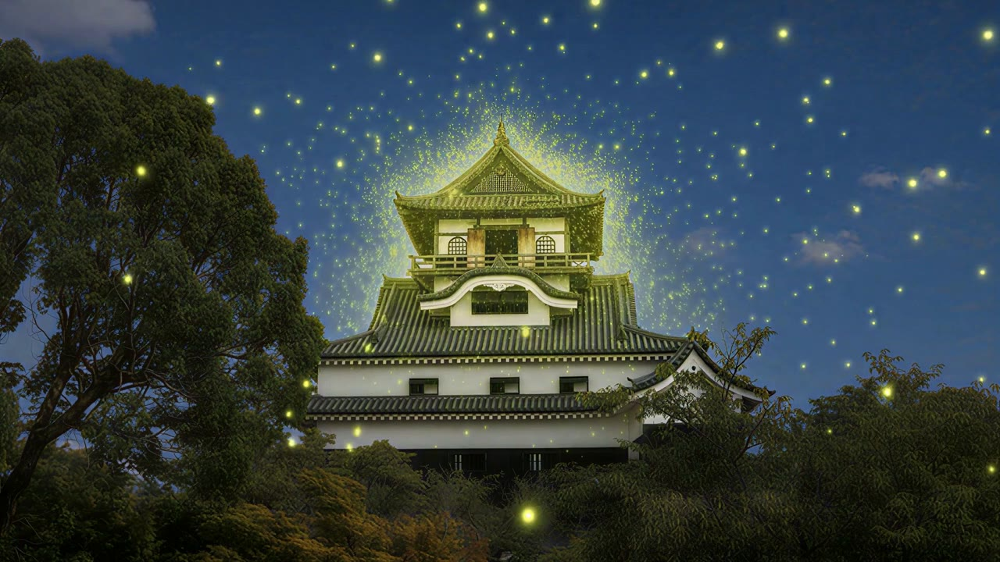
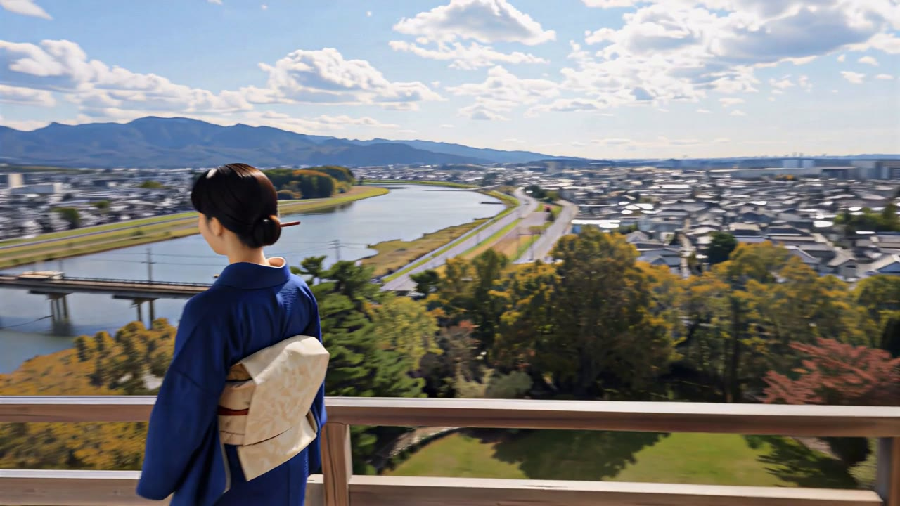
30秒版「光の城」
同じ犬山城を題材に、見せ方を大きく変えた30秒版です。墨の線で描いた城が組み上がり、夜の天守の白い壁に春・夏・秋・冬の映像を映す、プロジェクションマッピング風の演出にしました。
映像が白い漆喰の部分だけに重なるよう、1コマずつ壁の形を切り抜いて合成しています。瓦や石垣はそのままで、城が回るあいだも直前の季節が映り続けます。
AIで作った姫の歌と和風のBGMを合わせ、歌の区切りで季節が切り替わるように編集しました。
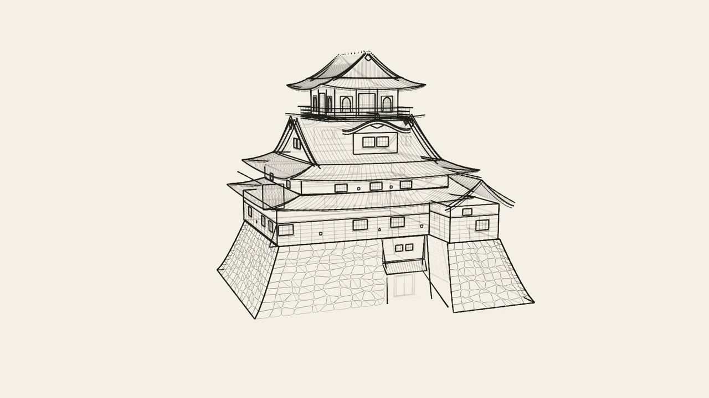
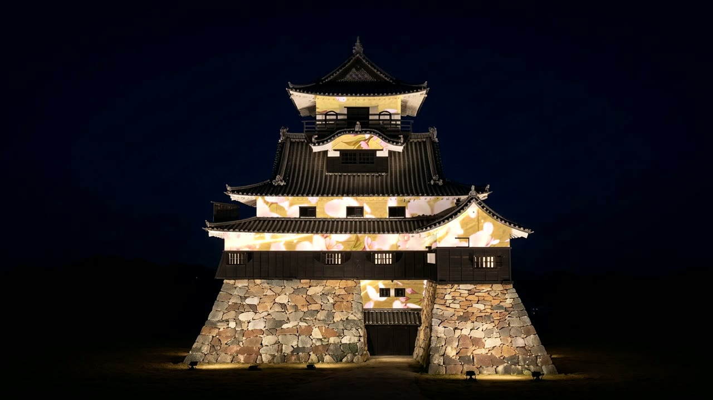
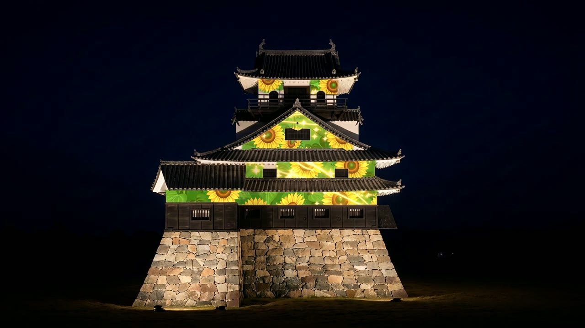
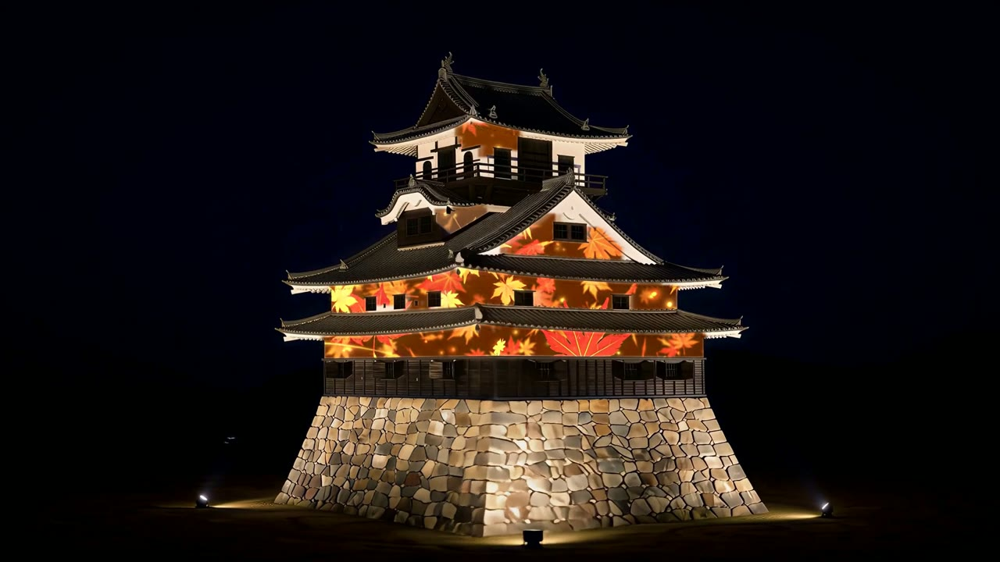
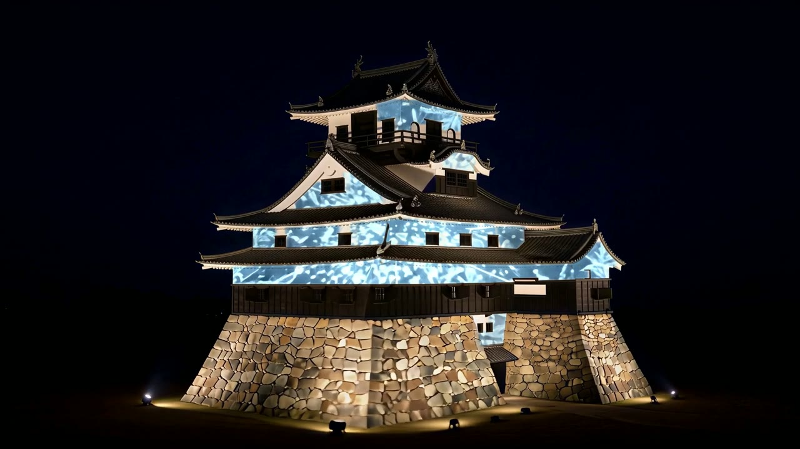
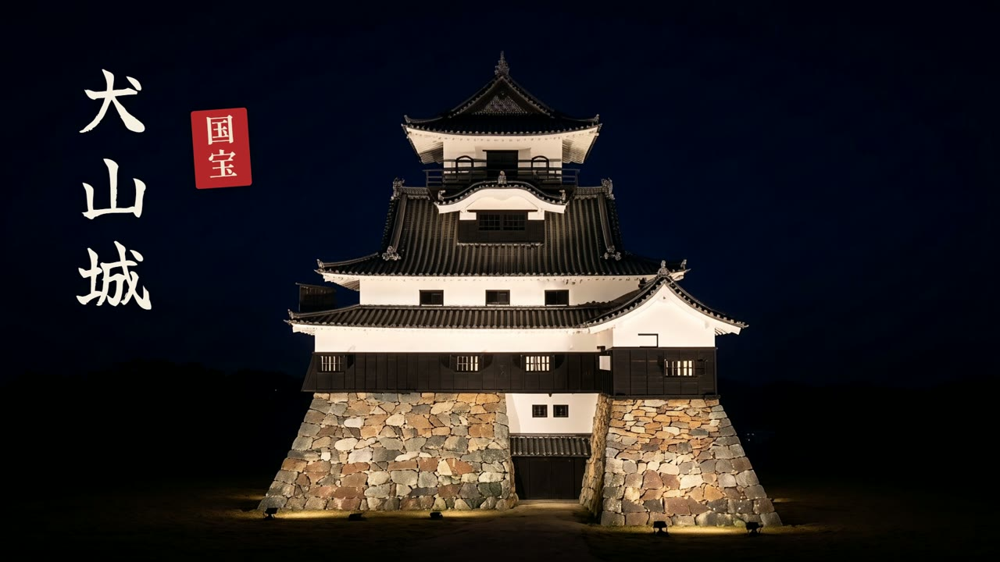
たかぼうへのご相談はこちらから